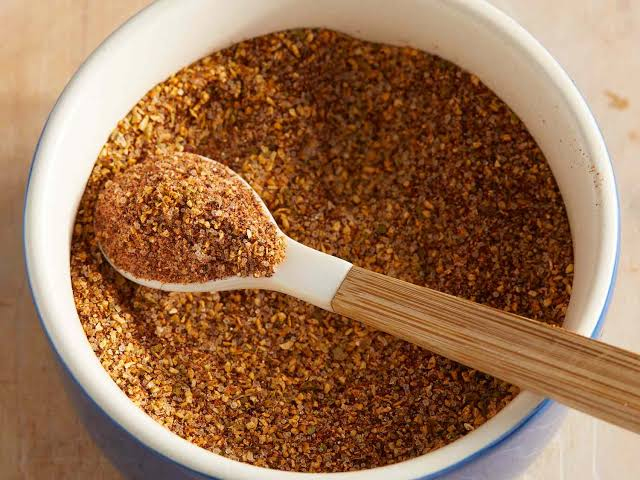

Taco Seasoning
Home

Description
An easy homemade taco seasoning that you can tailor to your tastes. Better than store bought and you know exactly what ingredients are in it.
It is very easy to make in bulk and store for future use so that week night dinners are easier to throw together.
Ingredients
- 1 tablespoon chili powder
- 1 1/2 teaspoons ground cumin
- 1 teaspoon salt
- 1 teaspoon ground black pepper
- 1 teaspoon ground paprika
- 1 teaspoon garlic powder
- 1 teaspoon onion powder
- 1/2 teaspoon dried oregano
Steps
- Gather all ingredients.
- Mix chili powder, cumin, salt, pepper, paprika, garlic powder, onion powder,and oregano in a small bowl until combined.
- Store in an airtight container. I like using a small mason jar.